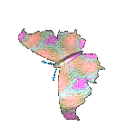
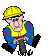
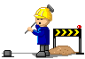

hello boyfriend ziggy ♡
this is my domain, i am stuck in da computer
i don't have website to put on it yet, so while there is nothing really to have here i quickly made this in 20 minutes just for u.
this is my domain, i am stuck in da computer
i don't have website to put on it yet, so while there is nothing really to have here i quickly made this in 20 minutes just for u.


